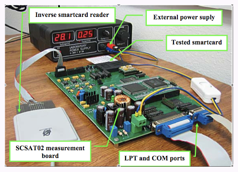
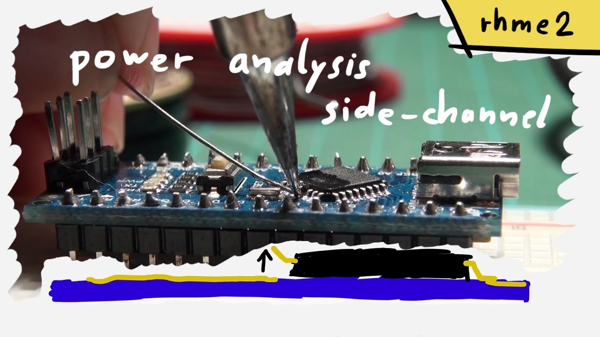
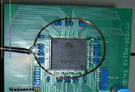
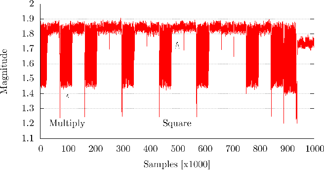
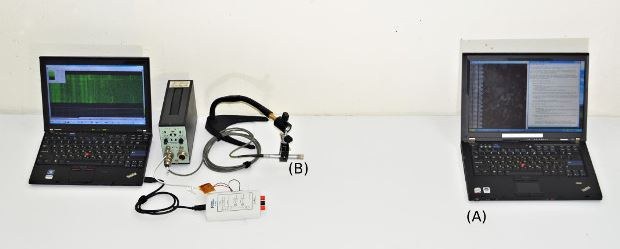
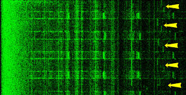
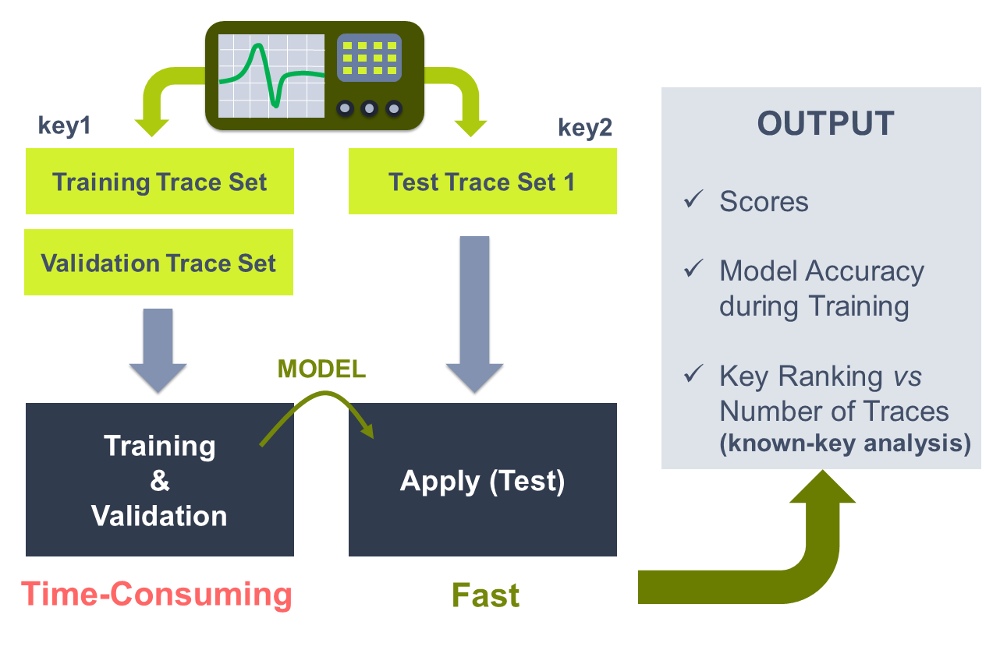
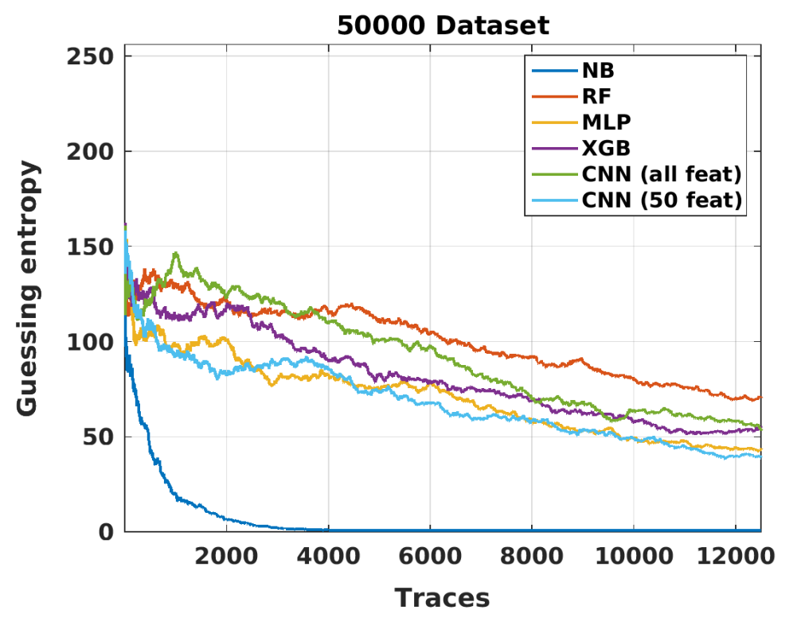
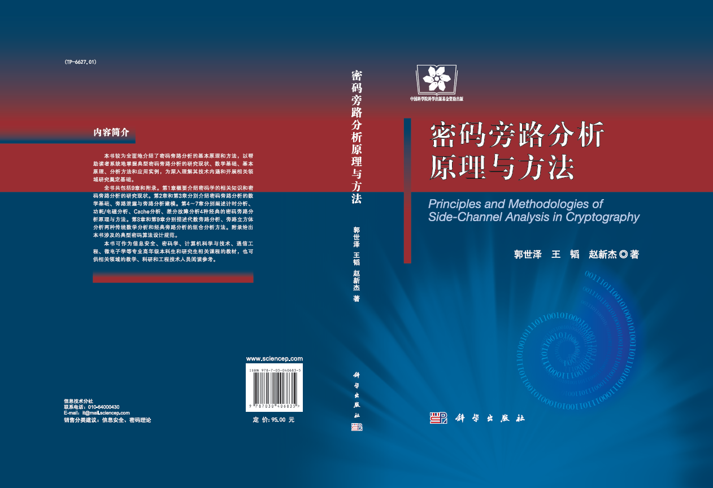
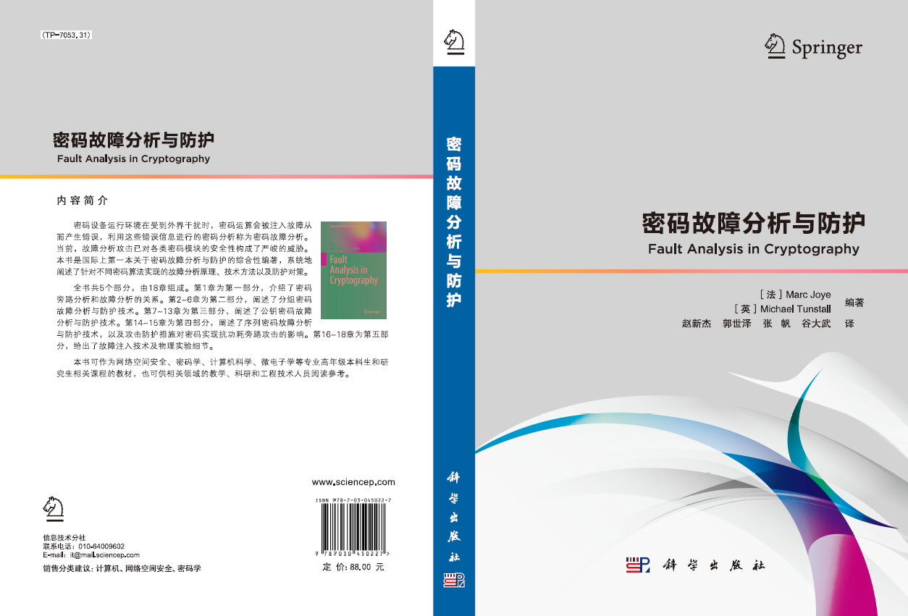

|
欢迎来到张帆的中文主页 计算机科学与技术学院 浙江大学 |
| 我的主页 | 相关新闻 | 发表论著 | 科研活动 | 教学活动 | 奖励荣誉 | 相关信息 | 我的学生 |  |
 |
|
相关链接:
|
旁路分析
密码芯片的安全性遵循“木桶理论”和“短板效应”，即安全性取决于最薄弱环节。密码芯片中密码算法的设计安全性并不等同于算法的实现安全性。密码算法在芯片中运行时会产生时间、功耗、电磁、声音、故障输出等旁路泄露，这些旁路泄露同芯片中运行的密码算法的中间状态和运算操作存在一定的相关性，可用来进行秘密信息提取，此类攻击技术称之为旁路攻击或侧信道攻击。
功耗旁路分析
功耗攻击是一种利用密码设备运行泄露的功耗进行密钥分析的攻击方法。密码设备在运行时需对加密中间状态进行处理，会产生并泄露出功耗，这些功耗同加密操作或中间数据之间存在一定的相关性，结合一些分析方法和密码算法设计可进行密钥分析。1998年，Paul Kocher等发现智能卡上的密码算法执行过程中会产生功耗泄露，可用于密钥破解，并成功对DES密码算法进行了密钥恢复。
 |  | |
| 搭建智能卡的功耗采集电路 | 基于功耗的旁路分析技术 |
电磁旁路分析
电磁攻击指的是攻击者可使用电磁接收机等设备测量到电子设备运行过程中的电磁辐射，剖析电磁辐射同密码运算之间的相关性，在此基础上进行密钥分析的攻击技术。事实上，电磁辐射是能量在电磁空间上的另一种体现，不同数据和电磁辐射之间的相关性基本等价于同能量消耗的相关性。因此，功耗分析攻击中的方法可以直接应用到电磁分析攻击中。2000年，Jean-Jacques Quisquater等发现密码算法运行过程中的电磁辐射泄露可用于密钥破解。
 |  | |
| 自行搭建电磁采集探头 | 简单电磁分析观测的波形 |
声音旁路分析
声音旁路攻击主要利用密码设备执行过程中不同数据和操作同声音的相关性进行密钥提取，由于其具有非接触式信息采集手段，现实可行性较高，并可用于攻破某些带有功耗、电磁防护的密码实现。2004年，Adi Shamir等发现计算机在运行密码运算时电子器件震动发出的高强度噪声可用于密钥破解，使用普通麦克风和放大器进行了声音信息采集，并给出了RSA不同运算执行的声音模式。
 |  | |
| 基于声音的旁路攻击 | 分析GnuPG RSA的解密密钥 |
光子旁路分析
2010年，Jerome Di-Battista等发现嵌入式芯片中门电路级翻转产生的光子数量和分布存在差异，可用于密码破解，并使用激光平台和高精度相机成功采集到单个门电路翻转的光子泄露，最后对DES密码实现进行了密钥恢复攻击。
旁路分析方法
- 差分计时分析: 主要利用密码算法处理不同敏感信息时（如密钥本身或者可恢复密钥的秘密变量）的执行时间差异，通过差分分析的方法进行密钥恢复。
- 简单功耗分析: Simple power analysis: SPA 主要通过分析功耗轨迹来推断密码算法处理的密钥比特或者操作，可用于分析密码在一个特定时间执行了什么特定的指令，以及指令中涉及到的秘密参量的含义[5]。SPA主要适用于使用了跳转指令，且跳转指令功耗消耗特征差别比较大或密钥位特征可从功耗曲线上直接区分出来的算法，一般都是针对RSA、ECC等公钥算法。典型的SPA只需要一条功耗轨迹，但为了减小测量设备和线路带来的噪声影响，攻击者一般需对同一样本采集多次求均值功耗轨迹然后进行分析。同样，简单功耗分析可直接适用于电磁分析，称之为简单电磁分析（Simple EM analysis: SEMA）。
- 差分功耗分析: Differential power analysis: DPA 主要利用密码算法处理单比特为0和1的功耗差异，攻击者预测一个密钥片段，对于每个功耗时间点，将预先计算出该预测值对应的所有中间状态值，再计算选择函数。根据选择函数的值把对应的功耗划分为两个聚类，并计算两个聚类的功耗均值差，得到1条均值曲线，正确密钥片段对应的功耗均值曲线会出现较大峰值。由于统计分析方法的引入，差分功耗分析可对多条功耗曲线进行分析，攻击可适用于公钥密码、分组密码、序列密码等各种密码算法。
- 相关功耗分析: Correlation power analysis: CPA 主要是根据已知明文或密文片段，结合预测的密钥片段，猜测多个样本执行同一操作时的汉明重或汉明距离，然后计算预测汉明重向量与实际采集的功耗矩阵每一列的相关性系数，得到一条功耗相关系数曲线，正确的密钥片段对应的相关性曲线中会出现较大尖峰，反之则比较平缓。同DPA相比，CPA可利用中间状态的多个比特的泄露，攻击数据复杂度要比DPA低；但CPA主要适用于泄露模型符合汉明重泄露模型的密码实现，具有一定的局限性。
- 模板分析: Template Analysis: TA 主要通过刻画密码实现处理不同数据或操作的旁路泄露，构建一定的模板，然后通过对采集的旁路泄露与模板进行匹配，匹配度最大的模板对应的数据或操作即可被识别出来，然后用于密钥分析。根据攻击者是否需要获取一个模板密码设备，可将模板分析分为外部模板分析和内部模板分析两种。
- 互信息分析: Mutual Information Analysis: MIA 主要基于信息论中的互信息概念，通过计算预测某密钥片段候选值对应的泄露同实际泄露之间的互信息进行密钥分析。MIA可以在目标泄露模型难以精确刻画的场景下实施，相比SPA、DPA、CPA来说通用性更强；同时，由于MIA不需要获取一个模板密码设备，因而攻击条件相比外部模板攻击要更为宽松。
- 旁路立方体分析：旁路立方体分析主要利用旁路分析方法恢复密码中间状态比特，使用立方体分析方法进行后续密钥分析。攻击克服了立方体分析中多项式规模受轮数限制较大的缺陷，扩展了传统旁路分析的轮数。此外，旁路立方体分析还继承了立方体分析和旁路分析的优点，可在密码算法设计细节未知的情况下（黑盒场景下）实施密钥分析，且可对密码算法的物理安全性构成现实威胁。
- 代数旁路分析: Algebraic Side Channel Analysis：ASCA 将代数分析和旁路分析相结合，利用代数分析方法建立与密码算法等价的代数方程组，通过采集旁路信息并将其转化为额外的代数方程组，二者联立求解恢复密钥。代数旁路分析克服了代数分析中方程组求解复杂度较高的缺陷，弥补了旁路分析样本量大、分析轮数少、通用性差等不足，同时可利用密码算法所有轮的旁路泄露，降低攻击复杂度。
基于深度学习算法的旁路分析
当前机器学习、深度学习、迁移学习、强化学习等一些新型的人工智能算法已经被广泛使用。在旁路分析领域，机器学习和深度学习也可以作为一种基本的工具，用于改进攻击的效果，降低所需要的样本数量或者是摆脱对某些模型的束缚。2016的旁路安全会议SPACE上，基于深度学习的旁路攻击效果已经得到了体现。
 |  | |
| Inspector 深度学习 SCA | DL-SCA on DPA Context V2 |
旁路攻击新型应用
- 基于旁路的生物密码系统攻击研究: 近年来，研究者将生物特征和传统密码技术相结合，应用到身份认证领域，开发了多种生物密码芯片。生物密钥系统（Biometric Key System-BKS）作为其中的典型应用，具有容错性好、区别性大、单向性等优点，对其的安全性分析也备受关注。密码旁路攻击给密码实现和分析提供了新的思考和方向，当前密码旁路攻击技术主要集中在对传统密码算法的研究上，最近研究者指出可以通过采集BKS执行时泄露的功耗、电磁等信息，结合差分分析、相关分析、模板分析等方法来破解生物密钥，为BKS安全性分析提供了新的思路。
- 基于旁路的硬件木马检测方法研究: 集成电路芯片在设计和生产中可能被插入实现恶意功能的小电路，又称“硬件木马”，为后续恶意行为打开方便之门。随着硬件木马的逐渐改进，现有的集成电路检测技术对其的检测还存在诸多困难，检测代价昂贵。最近Agrawal等人指出旁路分析方法可以用于检测集成电路芯片中的硬件木马，根据木马电路工作时一定会在泄露的物理特征中有所体现的原理，利用不含硬件木马的芯片泄露物理特征搭建“集成电路指纹”，然后对待测芯片提取出运行时泄露的物理特征，并与“集成电路指纹”进行对比，以检测木马电路的存在[107]。这一研究成果为密码实现攻击开拓了应用领域，为硬件木马检测提供了新的技术，得到了密码学者的极大关注。
- 基于旁路的密码算法逆向工程研究: 密码旁路攻击主要利用密码系统工作时泄露的功耗、电磁辐射等信息进行密钥恢复。早在Kocher等人在1999年提出基于功耗旁路攻击时，他们已经注意到使用旁路分析的方法对芯片原始代码进行逆向工程获取密码算法的可行性，但没有进行具体研究。有必要对这个领域开展一定程度的研究。
 |  | |
| 密码旁路分析原理与方法 | 密码故障分析与防护 |
最后一次更新时间:
版权所有©2026: 张帆